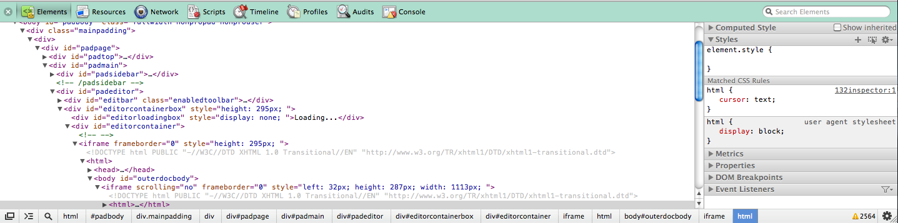
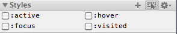

Google Chrome Web Inspector
Working with CSS
- Open up Google Chrome.
- Right click on your webpage (specifically on the div or element whose css is misbehaving)
- Select
Inspect Element. It should pop up a window at the bottom of the browser that looks a bit like this:
- You should see that the misbehaving element is highlighted in blue in the left
panel. If it is not, mouse over the element again and right click and
Inspect Elementagain, it should now be highlighted. - In the right panel you will see a styles accordion, expand it if it is not already.
- In the styles accordion you will see which style rules are applied to the element and from which line of css they originate.
- To change an existing rule, double-click on that rule.
- To add another rule to just that element, click to the right of the closing brace, and start typing:
a {
cursor: pointer;
} >click right here to add another rule<
- To disable a rule, hover your mouse over it and then uncheck the checkbox on the right of the rule.
To see what an element looks like when
:hoveris active, click the icon on the accordion banner with a mouse over a dotted box:- You can click on the filename:linenumber next to the rule to see the specific text for that rule.
- To validate your css, use http://validator.w3.org/#validate_by_input
Working With the DOM inspector
- Open Chrome to some webpage
- Right click on the element which you want to see.
- Select “Inspect Element”.
- You should be looking at the DOM tree! You can:
- Edit attributes and contents (right click on the element’s entry)
- Collapse and expand the node and its parents (this is a much better way to see the source code of a page! [1])
[1] Note that if you “view source” on a page Chrome will make a new request to that URL and display exactly what the server returns. The Web Inspector shows you what the page is currently, which may be dramatically different because of Javascript!
Working with Javascript
- Open Chrome to some webpage
- Right click anywhere on the page and select “Inspect Element.” Alternatively click on the Wrench (right of the URL bar) -> Tools -> Javascript Console
- If you’re not on the tab labeled “Console” already, switch to it.
- You should have a prompt where you can now execute Javascript commands. Try typing 5+5 (followed by enter). The console will display the result of the command evaluated as an expression (for many constructions which aren’t valid expressions the console will simply return “undefined”).
Some Brief Notes on the other functions of the Chrome Web Inspector:
- The resources pane provides information about the various resources associated with a page. This is useful if you want to make sure a resource (e.g. an external script or stylesheet) has been loaded or for checking out the cookies.
- The network panel will log all network requests that the browser makes and give you all sorts of useful info about them. This is useful for looking at resources, but will also show you any requests made via Javascript.